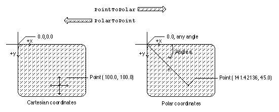

Converting Between Cartesian and Polar Coordinates
You can use QuickDraw GX functions to convert between Cartesian and polar coordinates. ThePolarToPointfunction converts a point in polar coordinates to Cartesian coordinates, (r, a) to (x, y). ThePointToPolarfunction converts a point in Cartesian coordinates to polar coordinates, (x, y) to (r, a). ThegxPolarpoint (r, a) corresponds to thegxPointpoint (r cos(a), r sin(a)). Since r2 = x2 + y2 and tan(a) = y / x, thegxPointstructure (100, 100) corresponds to thegxPolarstructure (141.42136, 45). Figure 8-19 shows the Cartesian coordinate of point (100, 100) and the polar coordinate of identical point (141.42136, 45).Figure 8-19 Converting between Cartesian and polar coordinates

The Cartesian and polar coordinate systems are described in the section "Cartesian and Polar Coordinate Conversion" beginning on page 8-10. The
PolarToPointfunction is described on page 8-56. ThePointToPolarfunction is described on page 8-57.